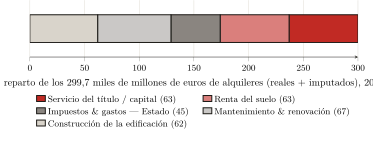
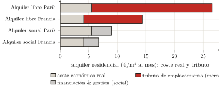
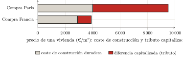

— Traducción por IA — Claude Fable 5 (Anthropic)
Tercera parte — Medición empírica de la captación · Capítulo 9
9 La renta residencial: el habitante
[…] expresarme en términos de número, peso o medida, no emplear más que argumentos extraídos de los sentidos y no considerar más que las causas que tienen un fundamento visible en la naturaleza.
William Petty, Political Arithmetick (1690)
Las dos partes precedentes han despejado el terreno. Se ha visto cómo la contabilidad nacional asciende el peaje a producción (capítulo 6), cómo las nomenclaturas lo dispersan hasta volverlo irreconocible (capítulo 7) y cómo las teorías que lo justifican ceden ante las cifras de sus propias instituciones (capítulo 8). Queda la pregunta que todo el libro ha remitido hasta aquí: ¿cuánto? De lo que un hogar paga por alojarse, ¿qué parte paga una vivienda realmente producida y qué parte no es más que un tributo sobre el acceso al suelo? La respuesta se da primero para la vivienda residencial, la primera y la más pesada de las tres medidas que la parte III ensambla. El método es el que los capítulos 6 y 7 han prescrito: retomar las cifras publicadas por el estadístico del Estado y reclasificarlas, ya no según su función técnica, sino según la relación real: lo que paga una producción, lo que recauda un peaje. A partir únicamente de los agregados oficiales, de modo que cualquiera pueda rehacer el cálculo. Con la disciplina que los capítulos 1 y 3 han fijado: no contar jamás como renta el interés del capital realmente incorporado, ni como producción el tributo del título. Y con la salvaguarda que el capítulo 7 ha levantado: no contar dos veces el mismo flujo.
9.1 El alquiler, y lo que encubre: descomposición de un agregado
Partamos del agregado menos discutible. En 2023, los alquileres (reales e imputados) pagados o «debidos» por el parque residencial francés ascienden a 299 700 millones de euros: 91 100 millones de alquileres reales, pagados por los inquilinos, y 208 600 millones de alquileres imputados, atribuidos por convención a los propietarios ocupantes.1 Es este bloque de 300 000 millones el que este capítulo descompone.
Ahora bien, la cuenta de la vivienda no lo descompone. Registra el alquiler como una masa única, cuyo valor añadido es por entero un excedente de explotación del «productor» arrendador, la convención que el capítulo 6 desmontó.2 Nos corresponde a nosotros repartirlo, a partir de las magnitudes que el SDES publica por otro lado. Tres bloques se dejan aislar.
Lo que paga una producción real, primero. La vivienda se construye y se mantiene: hay ahí un trabajo efectivo, que hay que acreditar como tal. La inversión en viviendas nuevas asciende a 82 000 millones; pero esa dotación incluye la compra de los terrenos de asiento (18 600 millones), que no es una producción: el propio SDES lo reconoce al clasificar el suelo entre los activos «no producidos» (capítulo 7).3 La construcción propiamente dicha (la edificación, excluido el suelo: lo que hogares, arrendadores y organismos pagan a las empresas de la construcción para edificar las viviendas nuevas, de la obra gruesa a los acabados) moviliza por tanto del orden de 62 000 millones; es, en la cuenta, la propia línea «construcción», una vez apartado el terreno.4 A lo que se añaden las grandes obras de mantenimiento y mejora del parque existente (revocos de fachada, tejados, calderas, rehabilitación energética): 67 000 millones.5 Producción real de vivienda: unos 129 000 millones.
Lo que recauda el Estado, después. El impuesto territorial sobre las propiedades edificadas (28 400 millones) y los derechos de transmisión (13 000 millones) gravan el bien de rendimiento sin remunerar ningún servicio de vivienda: son exacciones, y acrecientan lo que el usuario desembolsa, pero no van al rentista — van a la colectividad (capítulo 6).6 Es decir, del orden de 45 000 millones.
El resto, por último — y ese es el tributo. De los 300 000 millones de alquileres, restemos los 129 000 de producción real y los 45 000 de exacciones: queda, como un residuo, alrededor de 126 000 millones de euros (el 42 % del alquiler total) que no pagan ni una construcción, ni un mantenimiento, ni un impuesto, sino el solo derecho de acceder a un emplazamiento. Es la renta residencial: el peaje que el usuario paga al rentista por habitar (figura 1.1).

Precisemos el estatuto de este número. No es una partida leída en un cuadro: es un residuo, obtenido restando de un agregado con fuentes otros dos agregados con fuentes. Su solidez depende, pues, de la de sus componentes, y su eslabón más débil es la parte del suelo en la obra nueva. Ahora bien, se ha tomado en su nivel más bajo: el que la propia cuenta nacional aísla (22,7 % de la obra nueva). Toda hipótesis más realista no hace sino elevar la captación: llevada al 30 % (la parte de un proyecto tipo), sube a 131 000 millones; al 40 %, el nivel de Île-de-France, a 139 000. La renta residencial se sitúa, pues, entre 126 000 millones (la cota inferior, es decir, el 42 % del alquiler) y 139 000, y es la cota inferior la que se retiene.7 Y una salvaguarda mantiene esta cifra en su sitio: habiéndose deducido ya los intereses de los préstamos para obtener el excedente neto del arrendador, no cabría volver a añadirlos sin contar dos veces el mismo flujo (capítulo 7); la captación de la vivienda se detiene, pues, en 126 000 millones, y nada autoriza a llevarla más allá.
9.2 El «capital» es tributo capitalizado
Una objeción se presenta de inmediato, y toca el corazón del método. Una parte de esos 126 000 millones (aproximadamente la mitad) remunera no la «renta del suelo» desnuda, sino el capital del arrendador: los intereses que paga y el beneficio que obtiene de la suma inmovilizada en el bien. Ahora bien, el capítulo 3 estableció una disciplina inversa: el interés del capital realmente incorporado al suelo — drenaje, edificación, mejoras — no es renta, y debe acreditarse como una remuneración legítima. Contar ese «capital» como un tributo, ¿no es violar la regla que nos hemos dado?
No — a condición de ver qué capital, exactamente, se remunera aquí. El capital incorporado al edificio (lo que hizo falta para construirlo y mantenerlo) ya está contado, y del lado correcto: está en los 129 000 millones de producción real. El capital que remunera la parte «capital» del alquiler es de otra naturaleza: es el precio del título, es decir, la renta del suelo capitalizada (capítulo 3). Cuando un arrendador adquiere una vivienda, lo esencial de lo que paga no es el coste de reposición de los muros: es el valor de emplazamiento, igual a su vez a la renta futura actualizada. El interés que paga sobre esa suma no remunera, pues, ninguna producción: remunera la tenencia de un derecho, es decir, la renta bajo su forma financiera.
Que el valor inmobiliario sea, en lo esencial, valor del suelo capitalizado es un hecho masivamente establecido, no una suposición. Knoll, Schularick y Steger lo han mostrado sobre catorce economías avanzadas y cerca de siglo y medio: «el alza del precio de los terrenos explica alrededor del 80 % del boom mundial de los precios inmobiliarios desde la Segunda Guerra Mundial» — dicho de otro modo, la «levitación» de los precios es, en sus cuatro quintas partes, la del suelo y no la de la construcción.8 En Francia, Trannoy y Wasmer establecen que el suelo representa cerca de la mitad del valor inmobiliario del país (del orden de tres veces el PIB), y que el suelo edificado, que cubre el 1,5 % del territorio, concentra lo esencial de ese valor.9 Y Friggit, estadístico del Estado, cierra la demostración: el precio del suelo es un residuo, el receptáculo donde se precipita el crédito barato (capítulo 4).10
La conclusión es nítida: remunerar el «capital» alojado en el valor de un título sobre el suelo no es remunerar una producción; es servir un tributo bajo forma de interés. El único capital verdaderamente productivo, el de los muros, ya está contado aparte. Lo que queda, y que se clasifica en la captación, es la renta que la propiedad ha mudado en activo financiero. La «ascensión» a la propiedad no hace salir del peaje: le cambia el acreedor (capítulo 5). Volveremos sobre ello al término de este capítulo.
9.3 El alquiler y el coste real: lo que costaría alojarse
El residuo macroeconómico tiene su contrapartida, más elocuente, a la escala de una vivienda. Planteemos la pregunta ingenuamente: ¿qué costaría la habitación si el alquiler no pagara más que la habitación? Sea el coste económico real de una vivienda: la edificación amortizada sobre su vida útil, el mantenimiento corriente, el suelo contado por nada y ningún capital que remunerar. Todo lo que el alquiler de mercado recauda más allá de ese coste es, por construcción, tributo.
El cálculo exige hipótesis; helas aquí. La edificación de una vivienda, excluido el suelo, cuesta del orden de 2 100 euros el metro cuadrado.11 Amortizada sobre setenta y cuatro años (la vida útil de servicio de un edificio de habitación retenida por la contabilidad del capital, y no el optimista siglo), eso da unos 28 euros por metro cuadrado y por año; añadiendo un mantenimiento anual del orden del 1 % del valor de la edificación, se obtiene un coste económico real próximo a 4 euros por metro cuadrado y por mes.12
El alquiler de mercado, por su parte, alcanza en media nacional del orden de 14 a 15 euros el metro cuadrado al mes: el hogar paga, pues, cerca de tres veces y media el coste real de su vivienda.13 En París, donde el alquiler medio del sector libre se establece en 25,7 euros, la proporción sube a más de cuatro veces y media.14 La distancia no es un refinamiento de cálculo sensible a las hipótesis: es de un orden de magnitud, y sobrevive a todas las variantes razonables. Esa parte que excede el coste real no es otra cosa que el tributo de situación del capítulo 4: no el precio de los ladrillos, sino el del emplazamiento, que la ciudad entera ha fabricado y que uno solo cobra.
La prueba la da, por contraste, allí donde la renta se mantiene a raya. El alquiler del parque social (6,76 euros el metro cuadrado en media nacional, 8,96 en París) se sitúa mucho más cerca del coste económico real que el alquiler libre.15 No es que la vivienda social se construya de otro modo: su alquiler se fija fuera de la lógica del tributo del suelo. La diferencia entre el alquiler libre y el alquiler social mide, casi al desnudo, lo que el mercado hace pagar por el solo emplazamiento: el tributo no reside en el ladrillo, idéntico de una parte y de otra, sino en el derecho bajo el cual se lo ocupa (figura 1.2).

Estas proporciones parecen exceder el residuo del comienzo del capítulo: ¿un 42 % de tributo en el alquiler agregado, pero dos tercios o más en el alquiler de mercado? Las dos medidas se reconcilian en cuanto se ve que no pesan lo mismo. El residuo de 126 000 millones pone en relación el conjunto de los alquileres (contratos antiguos, parque social, alquileres imputados prudentemente evaluados, todos inferiores al alquiler de mercado) con el gasto de producción efectivo del año, el cual incluye la construcción nueva, es decir, la ampliación del parque, y no su solo mantenimiento. La proporción de esta sección confronta, en cambio, el alquiler de mercado, el que afronta el recién llegado, con el coste desnudo de la vivienda existente. El agregado da la media del parque entero; la proporción da el peldaño más expuesto, donde el tributo alcanza los dos tercios o las tres cuartas partes del alquiler. Los 126 000 millones son, pues, efectivamente una cota inferior: a medida que los contratos se renuevan al precio de mercado, es hacia la proporción de esta sección hacia donde se desliza el parque entero.
9.4 La compra, o el peaje convertido en intereses
Queda la objeción más extendida: la compra. Adquirir la propia vivienda, ¿no es salir del peaje? El capítulo 5 respondió en derecho; aquí se confirma en cifras, mostrando que la compra no suprime el tributo sino que lo convierte. El precio pagado es, como se ha visto, la renta capitalizada; el adquirente lo liquida en un flujo de intereses al banco, cuya contrapartida productiva es nula.16
Las proporciones lo confirman, más comprimidas que en el alquiler porque la compra compara un precio con un coste y no dos flujos. El precio de un piso, en media francesa, ronda los 3 900 euros el metro cuadrado, para un coste de construcción duradera del orden de 2 900: un tercio más que la edificación.17 En París, donde el metro cuadrado de segunda mano se negocia en torno a 9 500 euros para un coste duradero próximo a 4 000, la proporción supera el doble (figura 1.3).18 Y la distancia se agranda una vez tenido en cuenta el crédito: financiada a veinticinco años, una vivienda de 60 metros cuadrados cuesta, intereses incluidos, unos 350 000 euros en Francia y cerca de 900 000 en París.19 El comprador cree comprar un techo; compra sobre todo un emplazamiento, y se compromete a servir su tributo, en forma de intereses, durante un cuarto de siglo. La trayectoria hacia la propiedad, que se presenta como una salida, no hace así más que desplazar el peaje, que cambia de nombre y de acreedor sin desaparecer.

Balance
La renta residencial francesa se cifra en alrededor de 126 000 millones de euros al año, es decir, el 42 % de los alquileres y más de una décima parte del gasto en vivienda. No es un número lanzado al aire: es un residuo, obtenido restando de un agregado oficial la producción real de vivienda y las exacciones del Estado; reproducible a partir de los solos datos públicos; robusto en todo el intervalo de las hipótesis defendibles (de 126 000 a 139 000 millones, reteniéndose la cota inferior); y tomado, en cada bifurcación, del lado que lo minora. El mismo tributo se lee a la escala de una vivienda: alojarse cuesta, en París, cerca de cinco veces lo que costaría el solo abrigo, y comprarla más del doble, siendo la diferencia, en todas partes, el precio del emplazamiento. Ya se remunere el «capital» del arrendador o los intereses del comprador, se sirve, en proporción al suelo, una renta capitalizada de contrapartida productiva nula: la compra no levanta el peaje, lo convierte.
Establecido este primer tributo, la medida no está cerrada. El tributo sobre el espacio no pesa solo sobre el habitante: pesa también sobre el trabajador, por el alquiler de los locales de actividad, que este paga sin verlo en el precio de lo que consume. A lo que se añade, distinta, la extracción de los márgenes apilados en la cadena que produce lo edificado. Es el objeto del capítulo siguiente: tras la parte visible del peaje, que es el alquiler, hay que seguir su parte repercutida.
(Service des données et études statistiques (SDES) 2024a), figura 3.4 (p. 31). Estos alquileres se inscriben en un gasto total en vivienda de 611 700 millones de euros, es decir, el 21,7 % del producto interior bruto (ibid., fig. 1.10, p. 18). Sobre la naturaleza del alquiler imputado — un ingreso que nadie paga — véase el capítulo 6; aquí se retoma tal como las cuentas lo establecen, sin volver sobre ello.↩︎
(Service des données et études statistiques (SDES) 2024a): el alquiler imputado se construye por equivalencia de alquiler (el alquiler que pagaría el propietario por una vivienda idéntica alquilada en el mercado privado), y luego se asienta como producción. La cuenta no distingue nunca, dentro del alquiler, lo que paga el abrigo de lo que paga el emplazamiento. Esta descomposición no procede, pues, de un cuadro del SDES: es la reconstrucción que este libro opera sobre los agregados publicados — exactamente la reclasificación «según la relación real» que el capítulo 7 reclamaba.↩︎
(Service des données et études statistiques (SDES) 2024a), fig. 4.1 (p. 42): inversión en viviendas nuevas 82,0 = construcción (edificación) 62,3 + terrenos 18,6 + gastos 1,2, en miles de millones de euros. Restar el terreno es la estricta aplicación de la disciplina del capítulo 1: el suelo no se produce.↩︎
Es decir, la partida «construcción (edificación)» de la figura 4.1 (62,3 miles de millones de euros), estando el terreno (18,6) ya aislado. Nos atenemos así a la parte del suelo más baja — la que la propia cuenta nacional distingue (22,7 % de la obra nueva), inferior incluso al «cerca de un tercio» de un proyecto tipo establecido por la encuesta del SDES sobre los terrenos edificables ((Service des données et études statistiques (SDES) 2024b)) y al 40 a 50 % de Île-de-France ((Notaires du Grand Paris 2021)). Retener esta parte mínima minora la captación: toda hipótesis más realista sobre el suelo la elevaría (infra).↩︎
(Service des données et études statistiques (SDES) 2024a), fig. 4.1 (p. 42), «grandes obras de mantenimiento-mejora», 67,2 miles de millones de euros. Es, junto con la construcción de la edificación, la otra cara de la producción real de vivienda: un trabajo que mantiene e incluso acrecienta el valor de uso del parque.↩︎
(Service des données et études statistiques (SDES) 2024a), fig. 6.1 (p. 71–72). Se retiene aquí un perímetro amplio de las exacciones (≈ 45 000 millones de euros); atenerse a la sola TFPB residencial y a los DMTO estrictos (41,4 miles de millones) aumentaría en la misma medida el residuo captado. La elección es, pues, también aquí, conservadora. Recordatorio del capítulo 7: estas sumas se archivan bajo «exacciones», nunca puestas en relación con el tributo que gravan.↩︎
El reparto interno del residuo entre «renta del suelo» y «servicio del título» (≈ 63 + 63 en la figura) es indicativo: no cambia nada en el total, pues uno y otro son captados. Friggit mostró que el precio del suelo es en todo caso un residuo: «es el precio de las viviendas del vecindario el que […] determina el precio de los terrenos, y no a la inversa» ((Friggit 2024)).↩︎
Knoll, Schularick, Steger (2017); traducción nuestra. La distinción es decisiva para la medida: si el alza de los precios es, en un 80 %, alza del terreno, entonces el interés pagado sobre el precio de compra sirve, en la misma proporción, al tributo capitalizado — no a la edificación.↩︎
(Trannoy, Wasmer 2022): el suelo ≈ 44 % del valor inmobiliario francés, ≈ 3 veces el PIB; el suelo edificado ≈ 84 % del valor de todos los terrenos. Economistas de tradición liberal — testigos de cargo, no militantes de la tesis.↩︎
(Friggit 2024). El mecanismo, ya expuesto en el capítulo 4: el dinero fácil infla la solvencia de los hogares, y es el precio del suelo el que la absorbe. El interés que el comprador o el arrendador paga es, en lo esencial, el servicio de ese suelo capitalizado.↩︎
(Union sociale pour l’habitat, Banque des Territoires 2024) (USH–Banque des Territoires, Éclairages n.º 33, 2023): precio de coste 2 550 €/m² de superficie útil en Francia, de los cuales obras 1 790, suelo 520, otras cargas 320; la edificación sin el suelo ≈ 2 100 €/m². Se retiene este coste de la vivienda social, que es el dato público mejor establecido; la vivienda privada no difiere de él en orden de magnitud.↩︎
(OCDE 2009), cap. 13: vida de servicio media de los edificios residenciales 74 años (horquilla 40–95). Cálculo: 2 100 €/m² ÷ 74 años ≈ 28 €/m²/año de amortización; + 1 % de mantenimiento ≈ 21 €/m²/año; total ≈ 49 €/m²/año, es decir ≈ 4,1 €/m²/mes. El resultado depende de dos palancas que se asumen: una vida útil más corta o un mantenimiento más alto lo elevan. Se han tomado aquí los valores centrales de la literatura, no los más favorables a la tesis; aun así, la distancia al mercado sigue siendo de un orden de magnitud.↩︎
Alquiler de mercado nacional: del orden de 15 €/m² ((SeLoger / Bien’ici 2026)); el dato de anuncios «gastos incluidos» de (LocService 2024) (17 €/m²) es algo más alto, al diferir la base (flujo, gastos incluidos). Se retiene la horquilla baja, sin gastos, comparable al coste económico.↩︎
(Observatoire des loyers de l’agglomération parisienne (OLAP) 2025): alquiler medio 25,7 €/m²/mes (París intramuros, sector libre sin amueblar, a 1 de enero de 2024; 26,3 un año después). El coste económico real es allí algo superior (construcción más cara), del orden de 5,5 €/m²/mes; la proporción ronda cinco.↩︎
(Union sociale pour l’habitat 2025) para el alquiler medio HLM (6,76 €/m²); la cifra parisina (≈ 8,96) es del mismo orden que el alquiler social parisino medio, del orden de 9 €/m² a 1 de enero de 2024 — el más alto de Île-de-France (7,7) — (DRIHL Île-de-France 2024). La vivienda social no escapa a todos los costes (financiación, gestión), pero se fija fuera de la lógica del tributo del suelo: por eso se aproxima al coste real.↩︎
(Portalez 2024) para el «avasallamiento por la compra»; capítulo 5 para la demostración en derecho. Quien accede a la propiedad no ha abandonado la posición de usuario-pagador: paga el mismo peaje, a otro acreedor, mientras amortiza el préstamo.↩︎
Precio: piso medio en Francia ≈ 3 918 €/m² ((SeLoger / Bien’ici 2026)); coste duradero de la edificación ≈ 2 900 €/m² (coste de construcción incrementado con una prima de calidad, (Union sociale pour l’habitat, Banque des Territoires 2024)). Proporción ≈ 1,35.↩︎
Precio parisino estandarizado 2024: ≈ 9 500 €/m² (notarios del Grand Paris); el pico de 2021–2022 (≈ 10 600) se ha corregido en parte. Coste duradero de la edificación en Île-de-France ≈ 4 000 €/m². Proporción ≈ 2,3.↩︎
Crédito a 25 años al 3,5 %: el coste total (capital + intereses) incrementa el precio de compra en alrededor de la mitad. Los intereses sirven, en proporción a la parte del suelo en el precio (capítulo 4), al tributo capitalizado: es la conversión del peaje en servicio de la deuda.↩︎